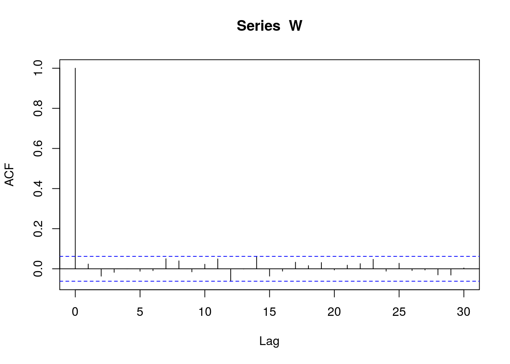

Chapter 3 Moving Average Models
We originally called these spatial moving-average models because they are analagous to moving average models in time series. They have also been called process convolution models. We review moving average models for time series to make the connection clear.
3.1 Discrete Time Series
We start with the simplest case, and that which is most often used in time series; the discrete case (random variables defined on the set of integers). Then, we move to the case of continuous time.
3.1.1 Definition and Construction
Let \(W_i\) be a random variable at integer \(i\). A moving average is created by “smoothing,” or averaging, the \(W_i\). One approach smoothes the trailing \(\theta\) variables, or those that came earlier in time,
\[\begin{equation} Z_i = \frac{1}{\theta}\sum_{i-\theta+1}^i W_i \tag{3.1} \end{equation}\]
Let’s create some random variables from moving averages in R, using \(\theta = 5\).
# set random number seed so reproducible
set.seed(1001)
# set number of independent random variables
N = 20
# create independent random variables
W = rnorm(N)
# set length of moving average
theta = 5
# create an empty vector to hold newly created variables
Z = rep(NA, times = 20 - theta + 1)
# create moving averages
for(i in theta:N)
Z[i - theta + 1] = mean(W[(i - theta + 1):i])A plot of both \(W_i\) and \(Z_i\) is given in Figure 3.1.
Figure 3.1: Creating moving average random variables, \(Z_i\) (black circles), by averaging independent random variables, \(W_i\) (gray circles).
Notice that the moving-average random variables, in black, are autocorrelated. By autocorrelated, we mean that when \(Z_i\) and \(Z_j\) that are closer together, they are generally more similar than if they are farther apart. Basically, we are taking random variables that are independent, the \(W\)’s, and, by smoothing them, creating autocorrelation. The autocorrelation occurs because the constructed random variables, \(Z\)’s, can share the same underlying \(W\)’s, and the closer the \(Z\)’s are, the more \(W\)’s they have in common. In R, we compute the autocorrelation function for a long time series and compute the empirical autocorrelation function.
# set random number seed so reproducible
set.seed(1001)
# set number of independent random variables
N = 1000
# create independent random variables
W = rnorm(N)
# set length of moving average
theta = 5
# create an empty vector to hold newly created variables
Z = rep(NA, times = 20 - theta + 1)
# create moving averages
for(i in theta:N)
Z[i - theta + 1] = mean(W[(i - theta + 1):i])
plot(acf(W))
Figure 3.2: Empirical autocorrelation function for \(\{Z_i\}\).
The empirical autocorrelation function shows that autocorrelation drops to zero at distance \(\theta\) and beyond because the constructed random variables do not share any \(W\)’s.
Another way to write (3.1) is
\[ Z_i = \sum_{i - \theta + 1}^i \omega_i W_i, \]
where \(\omega_i\) is the weight \(1/\theta\). More generally, we can think of the weights \(\omega_i\) as a function on the integers from \((-\theta + 1)\) to \(0\), and \(0\) outside of those limits,
\[\begin{equation} g(j;\theta) = \omega_j \mathcal{I}(-\theta < j \le 0), \tag{3.2} \end{equation}\]
for \(j \in \mathbb{Z}\), where \(\mathbb{Z}\) are the integers and \(\mathcal{I}(a)\) is the indicator function, equal to 1 if its argument \(a\) is true, otherwise it is \(0\). Note that \(g(j;\theta)\) is defined on all integers, but \(g(j;\theta)\) sets the values to \(0\) outside of the range \(0\) to \(-\theta\), which is convenient because we do not need to specify limits in the following,
\[\begin{equation} Z_i = \sum_{-\infty}^\infty g(j - i; \theta) W_i. \tag{3.3} \end{equation}\]
If \(\omega_j = 1/\theta\) in \(g(j;\theta)\), then (3.3) is exactly equal to (3.1). We write it this way because it will help clarify the connection to continuous time, and ultimately stream networks, in the next few sections. The function \(g(j;\theta)\) can be made quite flexible. Already, \(\theta\) is a parameter that controls the range of autocorrelation, but we can allow \(\omega_j\) in \(g(j;\theta)\) to vary in some way. Let
\[\begin{align} g_\ell(j;\theta) &= \frac{1}{\theta} \mathcal{I}(-\theta < j \le 0) \\ g_s(j;\theta) &= \left(1-\frac{|j|}{\theta}\right) \mathcal{I}(-\theta < j \le 0) \tag{3.4} \end{align}\]
Some R code to explore is given below, where we implement \(g_s(j;\theta)\) in (3.4).
# set random number seed so reproducible
set.seed(1015)
# moving average function
g_s = function(j, theta){(1-abs(j)/theta)*(-theta <= j & j <= 0)}
#set theta
theta = 10
# set number of independent random variables
N = 40
# create independent random variables
W = rnorm(N)
# create autocorrelated random variables Z. Because of trailing weights,
# (defined only for non-positive j), first Z_i is at theta
Z = rep(NA, times = N)
for(i in theta:N)
Z[i] = sum(g_s((1:N)-i, theta)*W)The results are plotted (Figure 3.3), which shows the values of \(g_s(j-15,\theta); j = 1,\ldots,40\) in the top panel as green circles, and the values of \(g_s(j-20,\theta); j = 1,\ldots,40\) as purple circles. Note the \(j-i\) argument defines \(Z_i\) by “shifting” the function forward \(i\) integers, and we have shown it for \(i=15\) and \(i=20\) (with downward arrows). Figure 3.3 also shows simulated values of \(W_i\), independent normal random variables with mean zero and variance 1, as gray circles in the middle panel. The resulting simulated \(Z_i\), for \(i = 10,\ldots,40\), using (3.3), are shown in the bottom panel. For example, \(Z_{15}\) is created by taking the weights given by the green circles, and multiplying each weight times the \(W_j\) just below it, and then summing these products, yielding \(Z_{15}\). A random variable for each \(i, i=10,\ldots,40\) was created in this way by simply shifting \(g_s(j-i,\theta)\) for each \(i\). The random number seed is shown so that you can obtain these exact results. You can also try various sample sizes, different \(g(j,\theta)\), etc., to better understand how moving averages work.
Figure 3.3: Moving average function, \(g_s(j-15,\theta)\), operating on W’s, resulting in \(\{Z_i\}\).
3.1.2 Properties
What properties do the moving average functions give to the random variables, \(\{Z_i\}\), when constructed using (3.3)? If \(E[W_i] = 0 \ \forall \ i\), then \(E[Z_i] = 0\) for either \(g(j;\theta)\) in (3.4). If the variance of \(W_i = 1 \ \forall \ i\), then the variance of \(Z_i\) will be
\[\begin{equation} \textrm{var}[Z_i] = \sum_{j = -\infty}^\infty [g(j;\theta)]^2, \tag{3.5} \end{equation}\]
and so if \(\{Z_i\}\) is constructed with \(g_\ell(j;\theta)\), then \(\textrm{var}[Z_i] = 1/\theta\). If \(\{Z_i\}\) is constructed with \(g_s(j;\theta)\), then \(\textrm{var}[Z_i] = (2\theta^2 + 3\theta + 1)/(6\theta)\). Note that we can always construct the random variables with mean \(0\) and variance \(1\) for \(W\), and then add a mean, and scale the newly constructed random variables, afterwards, to obtain any desired mean and variance. The autocovariance between \(Z_i\) and \(Z_{i + h}\) is
\[\begin{equation} C(h;\theta) \equiv \textrm{cov}[Z_i, Z_{i + h}] = \sum_{j = -\infty}^\infty g(j;\theta)g(j - h;\theta). \tag{3.6} \end{equation}\]
Consider \(g_\ell(j;\theta)\), then \(C_\ell(h;\theta) = (1 - h/\theta)/\theta\). The autocorrelation function is
\[\begin{equation} \rho(h;\theta) \equiv \frac{C(h;\theta)}{\sqrt{\textrm{var}(Z_i)\textrm{var}(Z_{i+h})}}, \tag{3.7} \end{equation}\]
so \(\rho_\ell(h;\theta) = (1 - h/\theta)\). A plot of \(\rho_\ell(h;\theta)\), for \(\theta = 5\), is
rho_ell = function(h, theta){(1 - h/theta)*(h < theta)}
par(mar = c(5,5,1,1))
plot(0:6, rho_ell(0:6, 5), pch = 19, cex = 3, cex.lab = 2, cex.axis = 1.5,
xlab = 'Lag h', ylab = 'Autocorrelation')Figure 3.4: Theoretical autocorrelation function for \(\{Z_i\}\).
Now compare Figure 3.2 with Figure 3.4. The empirical autocorrelation function on simulated data estimates the theoretical one derived from (3.7). For the moving average function \(g_s(j;\theta)\), the theoretical autocovariance function is
\[ C_s(h,\theta) = \frac{(\theta-h)(\theta-h+1)(2\theta + h + 1)}{6\theta^2} \]
and so the autocorrelation function is
\[ \rho_s(h,\theta) = \frac{(\theta-h)(\theta-h+1)(2\theta + h + 1)}{2\theta^3 + 3\theta^2 + \theta} \]
A plot of \(\rho_s(h;\theta)\), for \(\theta = 5\), is
rho_s = function(h, theta){((theta - h)*(theta - h + 1)*
(2*theta + h + 1))*(h < theta)/(2*theta^3 + 3*theta^2 + theta)}
par(mar = c(5,5,1,1))
plot(0:6, rho_s(0:6, 5), pch = 19, cex = 3, cex.lab = 2, cex.axis = 1.5,
xlab = 'Lag h', ylab = 'Autocorrelation')Figure 3.5: Theoretical autocorrelation function for \(\{Z_i\}\) when using \(g_s(h;\theta)\).
One very important result is that the mean, variance, autocovariance, and autocorrelation functions do not change if the moving average function is translated or flipped. Again consider \(g_s(j;\theta)\) in (3.4), which are the weights given in green in Figure 3.6. Now let
\[ g_{s1}(j;\theta) = \left(\frac{j}{\theta}\right) \mathcal{I}(0 \le j \le \theta) \\ g_{s2}(j;\theta) = \left(1-\frac{|j|}{\theta}\right) \mathcal{I}(0 \le j \le \theta). \] Let’s create these functions in R,
g_s1 = function(j, theta){(j/theta)*(0 <= j & j <= theta)}
g_s2 = function(j, theta){(1-abs(j)/theta)*(0 <= j & j <= theta)}For \(g_{s1}(j;\theta)\), the moving average function is translated from \(g_{s}(j;\theta)\) to the integers with positive values. For example, Figure 3.6 shows \(g_{s}(j-15;\theta)\) as green circles, which are exactly the same as in Figure 3.3). For \(g_{s1}(j-15;\theta)\), whose weights are shown as purple circles in Figure 3.6, the moving average function \(g_{s}(j;\theta)\) has been translated to the right (yet still defines \(Z_{15}\)). Although the simulated \(Z_15\) will obviously be different, the mean, variance, autocovariance, and autocorrelation are exactly the same for \(g_{s}(j;\theta)\) and \(g_{s1}(j;\theta)\). The same is true if \(g_{s}(j;\theta)\) is flipped. For \(g_{s2}(j-15;\theta)\), whose weights are shown as gold circles in Figure 3.6, the moving average function \(g_{s}(j;\theta)\) has been flipped (yet again defines \(Z_{15}\)). The statistical properties of \(\{Z_i\}\) are the same for all 3 of the moving average functions shown in Figure 3.6. This is interesting because we will see that translation and flipping matter for stream networks.
Figure 3.6: Three moving average functions – \(g_s(j-15;\theta)\) in green, \(g_{s1}(j-15;\theta)\) in purple, and \(g_{s2}(j-15;\theta)\) in gold – that yield the same mean, variance, autocovariance, and autocorrelation.
3.2 Continuous Time Series
Now, let us extend what we learned in Section 3.1 to continuous time.
3.2.1 Definition and Construction
Yaglom (1987) shows that a large class of autocovariances can be developed by creating random variables as the integration of a moving-average function over a white-noise random process,
\[\begin{equation} Z(s) = \int_{-\infty}^{\infty}g(x-s;\boldsymbol{\theta})dW(x), \tag{3.8} \end{equation}\]
where \(x\) and \(s\) are locations on the real line and \(g(x;\boldsymbol{\theta})\) is called the moving-average function defined on \(\mathcal{R}^{1}\). Equation (3.8) looks a little intimidating, but we can break it down and rely on what we learned in Section 3.1. First, \(g(x;\boldsymbol{\theta})\) is defined on continuous \(x\), but otherwise is exactly analogous to (3.2), which was defined on the integers. Next, consider \(dW(x)\), which is a “Brownian motion differential.” First, look again at (3.3) and remove the stipulation that \(g(j;\theta)\) is defined on integers, and replace it with \(g(x;\theta)\) that is now defined on a regular sequence on the real line. Then imagine that we start making that sequence finer and finer, packing more and more \(W_i\) per unit of length. If the definition of \(g(x;\theta)\) stays constant, then the variance will grow and grow because we are summing more and more \(W_i\). In order to get to a continuous version of \(W_i\), their variances must shrink as we pack them tighter and tighter. Althought the mathematics are deep and intricate, for practical purposes we can think of \(dW(x)\) as the continuous analog to \(W_i\) where they get very dense and their variances shrink in just the right way. In the same way, the integral \(\int\) in (3.8) simply replaces the \(\sum\) in (3.3). If it is simpler, one can just think of (3.8) as a limit as (3.3) gets really dense within an area (that is, the \(\infty\)-limits of (3.3) are within a interval on the real line, rather than on the integers). Hence, the construction of moving averages for continuous time is a complete analog to discrete time. The result is that we have a random function rather than a finite set of random variables. This is shown by the notation that \(Z(s)\) is a function, defined everywhere on the real line; that is, at any \(s \in \mathcal{R}^1\).
What do some of these moving average functions, \(g(x;\boldsymbol{\theta})\), look like? A set of 5 of them, which will carry over to stream networks, is given in Table 3.1.
| Name | Moving average function |
|---|---|
| Linear-with-sill | \(g_{lws}(x;\boldsymbol{\theta}) = \theta_p \mathcal{I}(0 \leq x/\theta_r \leq 1)\) |
| Spherical | \(g_{sph}(x;\boldsymbol{\theta}) = \theta_p(1 - x/\theta_r) \mathcal{I}(0 \leq x/\theta_r \leq 1)\) |
| Epanechnikov | \(g_{epa}(x;\boldsymbol{\theta}) = \theta_p(1 - x/\theta_r)^2 \mathcal{I}(0 \leq x/\theta_r \leq 1)\) |
| Exponential | \(g_{exp}(x;\boldsymbol{\theta}) = \theta_pe^{-x/\theta_r} I(0 \leq x)\) |
| Mariah | \(g_{mar}(x;\boldsymbol{\theta}) = \theta_p\frac{1}{1 + x/\theta_r } I(0 \leq x)\) |
In R, we create each function,
g_lws = function(x, theta){(1)*(0 <= x & x <= 1)}
g_sph = function(x, theta){(1-x/theta)*(0 <= x & x <= theta)}
g_epa = function(x, theta){(1-x/theta)^2*(0 <= x & x <= theta)}
g_exp = function(x, theta){exp(-x/theta)*(0 <= x)}
g_mar = function(x, theta){1/(1 + x/theta)*(0 <= x)}A graph of each function is given in Figure 3.7 for \(\theta_p = 1\) and \(\theta_r = 1\).
Figure 3.7: la te da
To help visualize the construction of \(Z(s)\) in (3.8), we provide Figure 3.8 as the continuous version of Figure 3.3. The weights are provided in the top panel of Figure 3.8. Note that the constructions at locations \(x = 0.1\) and \(x = 0.2\), shown in green, the weights are only forward of \(Z(0.1)\) and \(Z(0.2)\), respectively. The product of these weights and white noise, \(dW(x)\), are integrated to provide the random value. We do not show any units for \(dW(x)\) because they are infinitesimally small (and infinitely dense). We do not show any units for \(Z(x)\) because it can be scaled to any variance, and we show more about its properties in the next section. Note that \(Z(x)\) is continuous, so it is a random function, shown in green for \(g_{sph}(x,\theta)\) when the weights are forward. When we flip the weights around, so that they point backward, as shown by the purple functions in the top panel, we obtain an mirror image of the random function (for fixed \(dW(x)\)) as the purple function in the bottom panel. The consequence of flipping the function will be discussed in the next section.
Figure 3.8: Moving average function, \(g_{sph}(x-s,\theta)\), integrated against dW(x), resulting in Z(x). We show the construction for x = 0.1, 0.2, 0.8, and 0.9. For x = 0.1, 0.2, colored in green, the weights are only forward from the location of the constructed random variable. For x = 0.8, 0.9, colored in purple, the weights are only backward from the location of the constructed random varible.
3.2.2 Properties
Now, what about properties of the construction in (3.8)? In Section 3.1.2 we showed the expectation, variance, autocovariance, and autocorrelation for discrete time series under a moving average construction. Generally, white noise is assumed to have mean 0, so
\[ \textrm{E}[Z(s)] = 0. \]
The variance is
\[\begin{equation} \textrm{var}[Z(s)] = E[Z(s)^2]=\int_{-\infty}^{\infty}g(x;\boldsymbol{\theta})^2dx. \tag{3.9} \end{equation}\]
Notice that for the variance to exist, (3.9) must exist; in other words, \(g(x;\boldsymbol{\theta})\) must not have too much area under the curve. This condition is often stated by saying that \(g(x;\boldsymbol{\theta})\) is “square integrable.”
What about the autocovariance and autocorrelation? The moving-average construction (3.8) allows a valid autocovariance between \(Z(s)\) and \(Z(s+h)\) to be expressed as
\[\begin{equation} C(h;\boldsymbol{\theta})= \int_{j = -\infty}^{\infty}g(x;\boldsymbol{\theta})g(x-h;\boldsymbol{\theta})dx. \tag{3.10} \end{equation}\]
Once again, compare (3.10) with (3.6) from discrete time series.
3.3 Tail-up Models
The moving average construction in (3.8) and (3.10) is well-known for the continuous real line from \(-\infty\) to \(\infty\), such as for time-series models. Ver Hoef, Peterson, and Theobald (2006) and Cressie et al. (2006) use moving averages for a stream network to develop models as in Figure 3.9.

Figure 3.9: Three locations on a stream network, \(r_1\), \(s_2\), \(t_3\). The tail-up moving-average functions are shown each location. The moving average functions are integrated against white noise on a stream network, which is depicted as the ragged black lines on the stream network, given as blue lines. Autocorrelation is created when functions overlap. The total area under the green function, going upstream from \(r_1\), is constant, requiring a splitting of the function up each branch.
We call these the ``tail-up’’ models because they are unilateral in the upstream direction (moving average function values are positive only upstream from a location). In Figure , the moving average function goes upstream from \(r_1\). When it reaches a fork, at \(u_1\), the function continues up each branch, but it is weighted. For example, weights could be proportional to flow volume or other meaningful metrics.
For the following development, let \(r_i\) and \(s_j\) denote two locations on a stream network, and let \(h\) be the stream distance between them. For FC locations, from (3.8), the unweighted covariance between two such locations is \[\begin{equation} C_t(h;\boldsymbol{\theta}) = \int_{h}^{\infty}g(x;\boldsymbol{\theta})g(x-h;\boldsymbol{\theta})dx, \tag{3.11} \end{equation}\] where \(h\) is the stream distance between locations \(r_i\) and \(s_j\). As mentioned earlier, a unique feature of tail-up stream network models is the splitting of \(g(x;boldsymbol{\theta})\) as it goes upstream (Figure 3.9, which is achieved by assigning a weighting attribute to each stream segment. To account for the splitting (Ver Hoef, Peterson, and Theobald 2006; Cressie et al. 2006), (3.8) is modified to construct a spatial process on a stream network as \[ Z(s_i;\boldsymbol{\theta}) = \int_{\vee_{s_i}} g(x-s_i;\boldsymbol{\theta}) \sqrt{\frac{\Omega(x)}{\Omega(s_i)}} dW(x), \] where \(\Omega(x)\) is an additive function that ensures stationarity in variance; that is, \(\Omega(x)\) is constant within a stream segment, but then \(\Omega(x)\) is the sum of each segment’s value when two segments join at a junction. (Figure ). This definition leads to (3.12) where \(\pi_{i,j}=\sqrt{\Omega(s_j)/\Omega(r_i)}\). If two sites are FU, then their covariance is zero, by construction (Figure 3.9. Then the following tail-down covariance models have been developed using the moving average construction (Ver Hoef, Peterson, and Theobald 2006):
\[\begin{equation} C_u(r_i,s_j|\boldsymbol{\theta}_u)= \left\{ \begin{array}{ll} \pi_{i,j}C_t(h;\boldsymbol{\theta}_u) & \textrm{if $r_i$ and $s_j$ FC,} \\ 0 & \textrm{if $r_i$ and $s_j$ FU,} \end{array} \right. \tag{3.12} \end{equation}\]
where \(\pi_{i,j}\) are weights due to branching characteristics of the stream, and the function \(C_t(h;\boldsymbol{\theta}_u)\) can take the following forms:
we obtain the following tail-up models.
- Tail-up Linear-with-Sill Model:
\[ C_t(h;\boldsymbol{\theta}_u)= \sigma^2_u\left(1 -\frac{h}{\theta_r}\right)\mathcal{I}\left(\frac{h}{\theta_r}\leq 1\right). \]
- Tail-up Spherical Model,
\[ C_t(h;\boldsymbol{\theta}_u)= \sigma^2_u\left(1-\frac{3}{2}\frac{h}{\alpha_u}+\frac{1}{2}\frac{h^3}{\alpha_u^3}\right) I\left(\frac{h}{\alpha_u}\leq 1\right), \]
- Tail-Up Exponential Model,
\[ C_t(h;\boldsymbol{\theta}_u)= \sigma^2_u\exp(-3h/\alpha_u), \]
- Tail-up Mariah Model,
\[ C_t(h;\boldsymbol{\theta}_u)= \left\{ \begin{array}{ll} \sigma^2_u\left(\frac{\log(90h/\alpha_u+1)}{90h/\alpha_u}\right) & \textrm{if} \; h > 0,\\ \sigma^2_u & \textrm{if} \; h = 0,\\ \end{array} \right. \]
- Tail-up Epanechnikov Model ,
\[ C_t(h;\boldsymbol{\theta}_u)= \frac{\sigma^2_u(h-\alpha_u)^2f_{eu}(h;\alpha_u)}{16\alpha_u^5} I\left(\frac{h}{\alpha_u}\leq 1\right), \]
where \(f_{eu}(h;\alpha_u)=16\alpha_u^2 + 17\alpha_u^2h - 2\alpha_uh^2-h^3\), \(I(\cdot)\) is the indicator function (equal to one when the argument is true), \(\sigma^2_u > 0\) is an overall variance parameter (also known as the partial sill), \(\alpha_u > 0\) is the range parameter, and \(;\boldsymbol{\theta}_u = (\sigma^2_u,\alpha_u)^\top\). Note the factors 3, and 90 for the exponential and Mariah models, respectively, which cause the autocorrelation to be approximately 0.05 when \(h\) equals the range parameter, which helps compare range parameters (\(\alpha_u\)) across models. (The distance at which autocorrelation reaches 0.05 is sometimes called the effective range when models approach zero asymptotically.)
3.4 Tail-Down Models
The moving average construction in (3.8) and (3.10) is well-known for the continuous real line from \(-\infty\) to \(\infty\), such as for time-series models. For tail-down models, we also distinguish between the FC and FU situation. When two sites are FU, recall that \(b\) denotes the longer of the distances to the common downstream junction, and \(a\) denotes the shorter of the two distances. Then the model is the integral of the overlapping moving average functions seen in Figure 3.10.

Figure 3.10: Three locations on a stream network, \(r_1\), \(s_2\), \(t_3\). The tail-up moving-average functions are shown each location. The moving average functions are integrated against white noise on a stream network, which is depicted as the ragged black lines on the stream network, given as blue lines. Autocorrelation is created when functions overlap. The total area under the green function, going upstream from \(r_1\), is constant, requiring a splitting of the function up each branch.
If two sites are FC, again use \(h\) to denote their total separation distance via the stream network, and the model is the integral of the overlapping moving average functions seen in Figure 3.10. The following are tail-down models:
- Tail-Down Linear-with-Sill Model, \(b \geq a \geq 0\), \[ C_{d,lws}(a,b,h;\boldsymbol{\theta})= \left\{ \begin{array}{ll} \theta_p\left(1 -\frac{h}{\theta_r}\right)I\left(\frac{h}{\theta_r}\leq 1\right) & \textrm{if FC,}\\ \theta_p\left(1 -\frac{b}{\theta_r}\right)I\left(\frac{b}{\theta_r}\leq 1\right) & \textrm{if FU,} \end{array} \right. \]
- Tail-Down Spherical Model, \(b \geq a \geq 0\), \[ C_{d,sph}(a,b,h;\boldsymbol{\theta})= \left\{ \begin{array}{ll} \theta_p(1-\frac{3}{2}\frac{h}{\theta_r}+\frac{1}{2}\frac{h^3}{\theta_r^3})I\left(\frac{h}{\theta_r}\leq 1\right) & \textrm{if FC,}\\ \theta_p\left(1-\frac{3}{2}\frac{a}{\theta_r}+\frac{1}{2}\frac{b}{\theta_r}\right) \left(1- \frac{b}{\theta_r}\right)^2I\left(\frac{b}{\theta_r}\leq 1\right) & \textrm{if FU,} \end{array} \right. \]
- Tail-down Epanechnikov Model, \(b \geq a \geq 0\), \[ C_d(a,b,h;\boldsymbol{\theta})= \left\{ \begin{array}{ll} \frac{\theta_p(h-\theta_r)^2f_{eu}(h;\theta_r)}{16\theta_r^5} I\left(\frac{h}{\theta_r}\leq 1\right) & \textrm{if FC,}\\ \frac{\theta_p(b-\theta_r)^2f_{ed}(a,b;\theta_r)}{16\theta_r^5} I\left(\frac{b}{\theta_r}\leq 1\right) & \textrm{if FU,} \end{array} \right. \] where \(f_{eu}\) was defined for tail-up models, and \[ f_{ed}(a,b;\theta_r)=16\theta_r^3 + 17\theta_r^2b - 15\theta_ra - 20\theta_ra^2 - \\ 2\theta_rb^2 + 10\theta_rab + 5ab^2 - b^3 - 10ba^2. \]
- Tail-down Exponential Model, \[ C_d(a,b,h;\boldsymbol{\theta})= \left\{ \begin{array}{ll} \theta_p\exp(-3h/\theta_r) & \textrm{if FC,}\\ \theta_p\exp(-3(a+b)/\theta_r) & \textrm{if FU,} \end{array} \right. \]
- Tail-down Mariah Model, \[ C_d(a,b,h;\boldsymbol{\theta})= \left\{ \begin{array}{ll} \sigma^2\left(\frac{\log(90h/\theta_r+1)}{90h/\theta_r}\right) & \textrm{if FC, } h > 0,\\ \sigma^2 & \textrm{if FC, } h = 0,\\ \sigma^2\left(\frac{\log(90a/\theta_r+1)-\log(90b/\theta_r+1)}{90(a-b)/\theta_r}\right) & \textrm{if FU, } a \ne b, \\ \sigma^2\left(\frac{1}{90a/\theta_r+1}\right) & \textrm{if FU, } a = b, \end{array} \right. \]
For all models, \(\sigma^2 > 0\) and \(\theta_r > 0\), and \(\boldsymbol{\theta} = (\sigma^2,\theta_r)^\top\). Although not necessary to maintain stationarity, the weights used in the tail-up models can be applied to the tail-down models as well. Note that \(h\) is unconstrained, because for model-building we imagine that the headwater and outlet segments continue to infinity, as first described by . Also note that \(a\) does not appear in the tail-down linear-with-sill model, but is used indirectly because the model depends on the point that is farthest from the junction; i.e., \(b\), and so \(a\) is the shorter of the two distances.
References
Yaglom, A. M. 1987. Correlation Theory of Stationary and Related Random Functions. Volume I. New York: Springer-Verlag.
Ver Hoef, Jay M., Erin E. Peterson, and David Theobald. 2006. “Spatial Statistical Models That Use Flow and Stream Distance.” Environmental and Ecological Statistics 13 (1): 449–64.
Cressie, Noel, Jesse Frey, Bronwyn Harch, and Mick Smith. 2006. “Spatial Prediction on a River Network.” Journal of Agricultural, Biological, and Environmental Statistics 11 (2): 127–50.